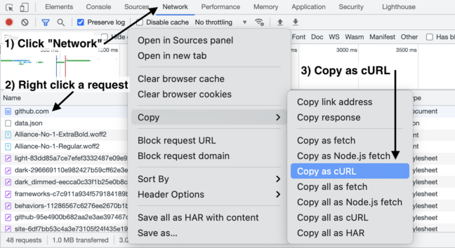

set
限制解除
Convert curl command syntax to Python requests, Ansible URI, browser fetch, MATLAB, Node.js, R, PHP, Strest, Go, Dart, Java, JSON, Elixir, and Rust code
GitHub
Convert curl syntax to Python, Node.js, PHP, R, Go, Rust, Elixir, Java, MATLAB, Ansible URI, Strest, Dart and JSON
curl command
curl google.com
Examples:
GET
-
POST
-
Basic Auth
Python requests
If your syntax is correct, create an
issue
.
import requests response = requests.get('http://google.com')
Language
Ansible
Browser (fetch)
Dart
Elixir
Go
Java
JSON
Node.js (fetch)
Node.js (request)
MATLAB
PHP
Python
R
Rust
Strest
Curl from Chrome
1) Open the
Network
tab in the
DevTools
2) Ctrl-click a request, "Copy as cURL".
3) Paste it in the cURL command box.
